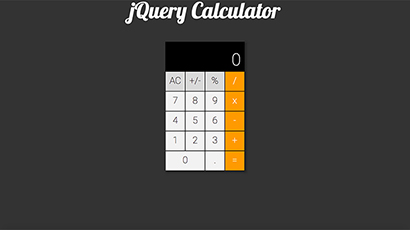

<section class="portfolio" id="work">
    <div class="container">
        <h2 class="section-title">My Work</h2>
        <div class="hero">
            
            
            
            
            
            
            
        </div><!-- /end .class -->
        <div class="details">
            <ul class="description">
                <li class="active list-desc">
                    <h2>Random Quote Generator</h2>
                    <p>This application was created using HTML/CSS and JavaScript. It also utilizes the Twitter API and allows users to Tweet their favorite quotes.</p>
                    <div class="tags">
                        <span class="tag">HTML5</span><span class="tag">CSS3</span><span class="tag">Bootstrap</span><span class="tag">Twitter API</span>
                    </div><!-- /end .tags -->
                    <a href=""><button class="view-project">View Project</button></a>
                </li>
                <li class="hidden list-desc">
                    <h2>Weather Forcast App</h2>
                    <p>This application is created using HTML/CSS, JavaScript and calls the Yahoo! Weather API as well as the Flickr API while using HTML5 Geolocations to display Flickr images based on geolocation, temperature, and weather codes.</p>
                    <div class="tags">
                        <span class="tag">HTML5</span><span class="tag">CSS3</span><span class="tag">Bootstrap</span><span class="tag">Twitter API</span>
                    </div><!-- /end .tags -->
                    <button class="view-project">View Project</button>
                </li>
                <li class="hidden list-desc">
                    <h2>Tribute Page</h2>
                    <p>This application is created using HTML/CSS, JavaScript and calls the Yahoo! Weather API as well as the Flickr API while using HTML5 Geolocations to display Flickr images based on geolocation, temperature, and weather codes.</p>
                    <div class="tags">
                        <span class="tag">HTML5</span><span class="tag">CSS3</span><span class="tag">Bootstrap</span><span class="tag">Twitter API</span>
                    </div><!-- /end .tags -->
                    <button class="view-project">View Project</button>
                </li>
                <li class="hidden list-desc">
                    <h2>jQuery Calculator</h2>
                    <p>This application is created using HTML/CSS, JavaScript and calls the Yahoo! Weather API as well as the Flickr API while using HTML5 Geolocations to display Flickr images based on geolocation, temperature, and weather codes.</p>
                    <div class="tags">
                        <span class="tag">HTML5</span><span class="tag">CSS3</span><span class="tag">Bootstrap</span><span class="tag">Twitter API</span>
                    </div><!-- /end .tags -->
                    <button class="view-project">View Project</button>
                </li>
                <li class="hidden list-desc">
                    <h2>Pomodoro Timer</h2>
                    <p>This application is created using HTML/CSS, JavaScript and calls the Yahoo! Weather API as well as the Flickr API while using HTML5 Geolocations to display Flickr images based on geolocation, temperature, and weather codes.</p>
                    <div class="tags">
                        <span class="tag">HTML5</span><span class="tag">CSS3</span><span class="tag">Bootstrap</span><span class="tag">Twitter API</span>
                    </div><!-- /end .tags -->
                    <button class="view-project">View Project</button>
                </li>
                <li class="hidden list-desc">
                    <h2>Wikipedia Viewer</h2>
                    <p>This application is created using HTML/CSS, JavaScript and calls the Yahoo! Weather API as well as the Flickr API while using HTML5 Geolocations to display Flickr images based on geolocation, temperature, and weather codes.</p>
                    <div class="tags">
                        <span class="tag">HTML5</span><span class="tag">CSS3</span><span class="tag">Bootstrap</span><span class="tag">JavaScript</span><span class="tag">Mediawiki API</span>
                    </div><!-- /end .tags -->
                    <button class="view-project">View Project</button>
                </li>
            </ul>
        </div><!-- /end details -->
        <div class="slideshow">
            <div class="left-arrow"></div>
            <ul class="slides">
                <li class="slide1"></li>
                <li class="slide2"></li>
                <li class="slide3"></li>
                <li class="slide4"></li>
                <li class="slide5"></li>
                <li class="slide6"></li>
            </ul><!-- /end .slides -->
            <div class="right-arrow"></div>
        </div><!-- /end .slideshow -->
    </div><!-- /end .container -->
</section>